Nuevo Activo Fijo:
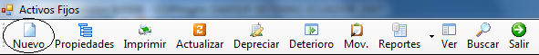
Figura1
Esta opción nos permite acceder a la pantalla de mantenimiento de activos(Figura2) para poder ingresar nuevos activos.
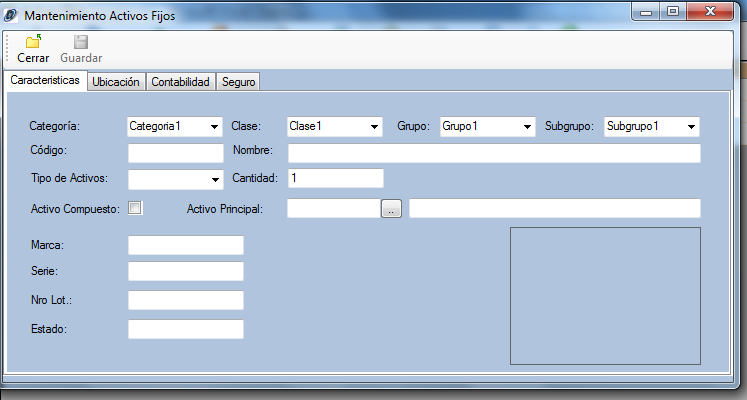
Figua2
Propiedades del Activos:
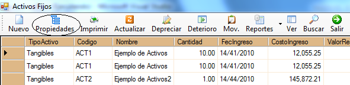
Figura3
Para poder ingresar a las propiedades se debe seleccionar el activo fijo y luego dar clic en el botón propiedades, al hacer esto se desplegará la pantalla de mantenimiento de activos (Figura2) para que el usuario pueda modificar o eliminar el activo seleccionado.
Imprimir:
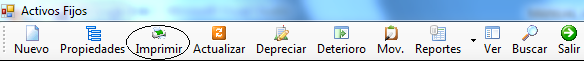
Figura4
Al hacer clic en este botón se desplegará un reporte con la información mostrada en la malla, para que el usuario pueda imprimir o exportar a Word, Excel o PDF (Figura5)
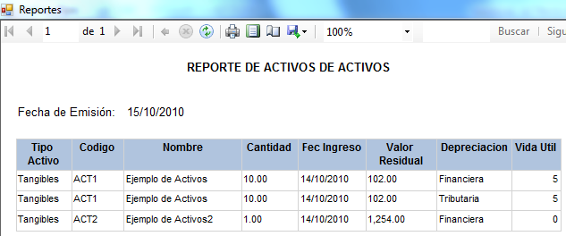
Figura5
Depreciar:
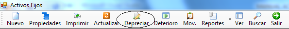
Figura6
Esta opción permite realizar la depreciación de los activos, al hacer clic en este botón se desplegara un cuadro de dialogo (Figura7) en el cual se debe ingresar la fechas de inicio y fin de la depreciación a realizarse, también provee la opción de depreciar un activo específico para lo cual se debe ingresar el código del mismo, si se deja esta opción en blanco se depreciarán todos los activos.
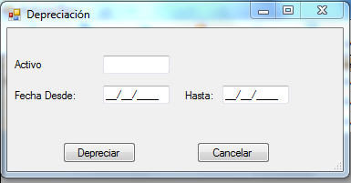
Figura7
Deterioro:
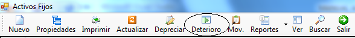
Figura8
Al hacer clic en esta opción se desplegará la ventana de Revalorización y deterioro de los activos (Figura9), en la cual se podrá visualizar o modificar la revalorización y deterioro de los activos.
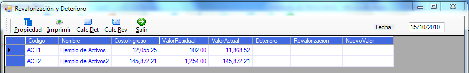
Figura9
Movimientos:
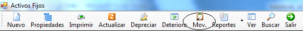
Figura10
Al hacer clic en esta opción se desplegará la pantalla de movimientos de activos fijos (Figura11) en la cual se puede ingresar modificar y eliminar los movimientos que ha tenido el activo fijo
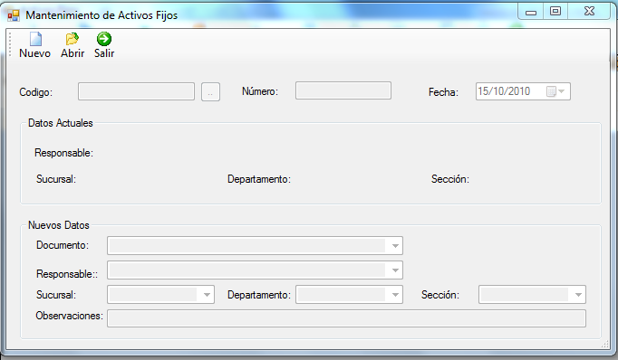
Figua11
Reportes:
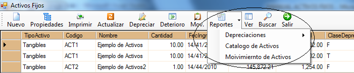
Figura12
El botón de reportes nos presenta las opciones de depreciaciones, catalogo de activos y movimiento de activos (Figura12). Al elegir depreciaciones nos despliega cuatro opciones de presentación de las depreciaciones (Figura13), Depreciación Financiera, Tributaria, la Diferencia entre las depreciaciones Financiera y Tributaria, y Detalla de depreciaciones. Dependiendo de la opción que se elija se desplegará la información en el reporte (Figura14) 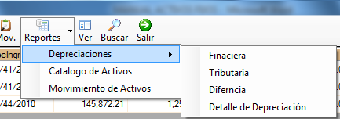
Figura13
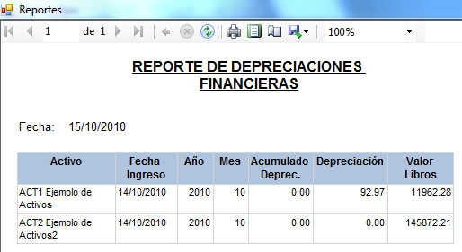
Figura14
Ver:
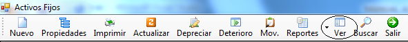
Figura15
Al hacer clic en el botón ver se desplegará un cuadro de dialogo con varias opciones (Figura16) las cuales nos permitirán cambiar la visualización de la malla dependiendo de las características que ingrese el usuario. Este cuadro de dialogo presenta las siguientes opciones:
· Tipo de Activos: mostrar activos tangibles, Intangibles o ambos
· Fecha de ingreso: mostrar activos correspondientes a un rango de fechas
· Activo Compuesto: mostrar solo activos compuesto
· Activos no compuestos: mostrar solo activos principales
· Categoría
· Clase
· Grupo
· Subgrupo
· Sucursal
· Departamento
· Sección
· Responsable
· Tipo de depreciación: mostrar depreciaciones Financieras, Tributarias o ambas
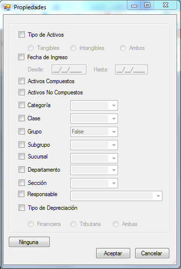
Figura16
Buscar:
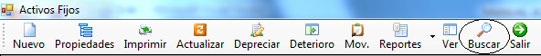
Al hacer clic en este botón se presentará un cuadro de dialogo (Figura17) que le permite al usuario buscar un activo por código, por nombre y por ubicación. Al hacer doble clic sobre el activo requerido se desplegará la ventana de mantenimiento de activos (Figura2) con los detalles del ítem seleccionado para que se lo pueda modificar o eliminar
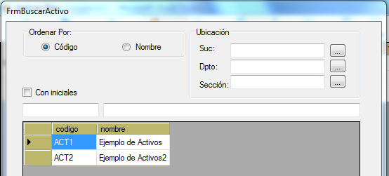
Figura17
Depreciaciones Anuales:
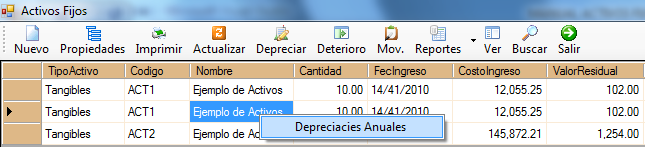
Figura18
Al seleccionar un activo y presionar el clic derecho del mouse se desplegará la opción de visualizar las depreciaciones anuales del activo seleccionado (Figura19).
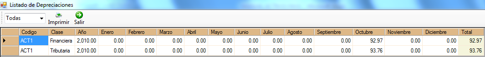